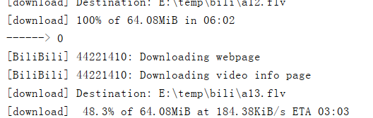

https://github.com/ytdl-org/youtube-dl
1.1curl安装
sudo curl -L https://yt-dl.org/downloads/latest/youtube-dl -o /usr/local/bin/youtube-dl
sudo chmod a+rx /usr/local/bin/youtube-dl
1.2wget 安装
sudo wget https://yt-dl.org/downloads/latest/youtube-dl -O /usr/local/bin/youtube-dl
sudo chmod a+rx /usr/local/bin/youtube-dl
1.3pip安装
pip install youtube-dl
更新pip install --upgrade youtube-dl直接点击下载.exe文件https://yt-dl.org/latest/youtube-dl.exe
sudo port install youtube-dlyoutube-dl --list-extractors #查看支持网站列表
-F 你的下载视频url #查看视频格式
-o 给下载的视频重命名，-o后面跟随的是路径和名字
-f 选择视频格式，就是-F显示的视频格式号码import subprocess
#下载视频函数
def down_videos(name,url,range_list):
urls = 'E:\\temp\\bili\youtube-dl.exe -f 1 -o E:\\temp\\bili\%s%d.flv %s%d' % (name,i,url,i)
p = subprocess.Popen(urls,shell=True,universal_newlines=True)
p.wait()#阻塞，等待子进程完成
print('------>',p.returncode)#判断执行状态，成功返回0
if __name__ == '__main__':
down_videos()